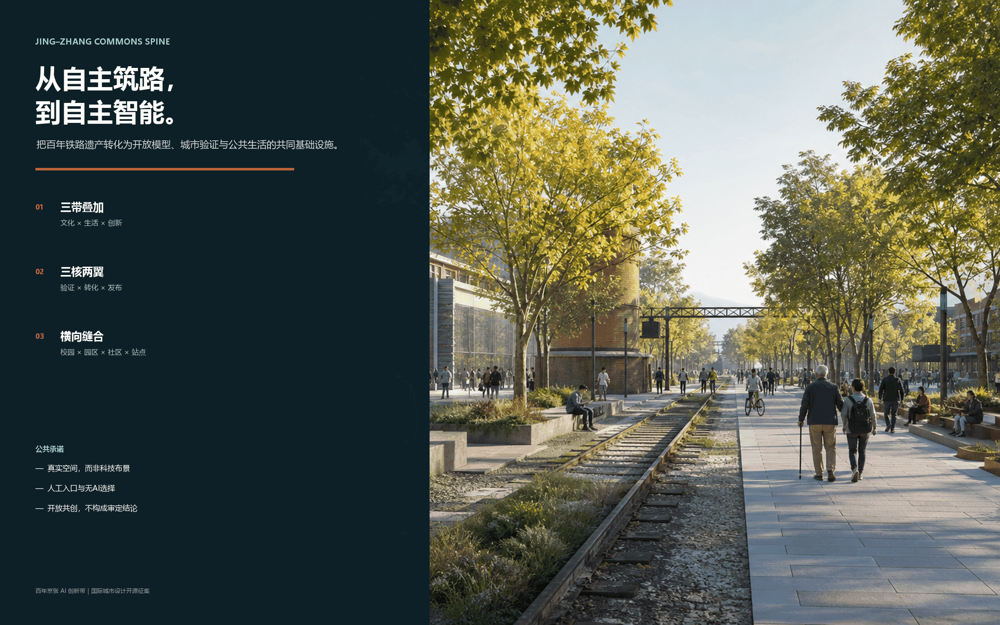
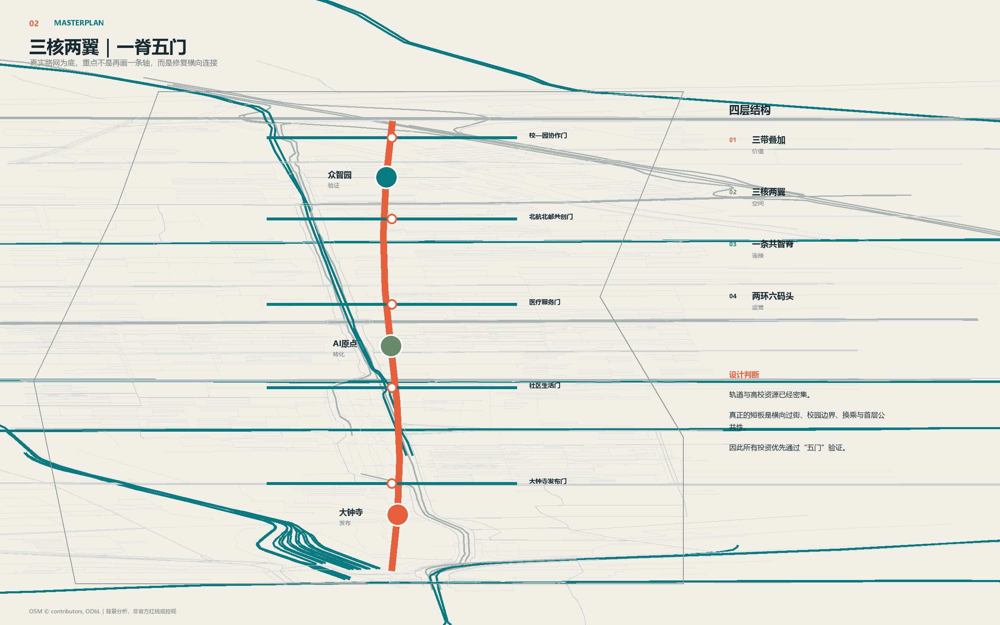
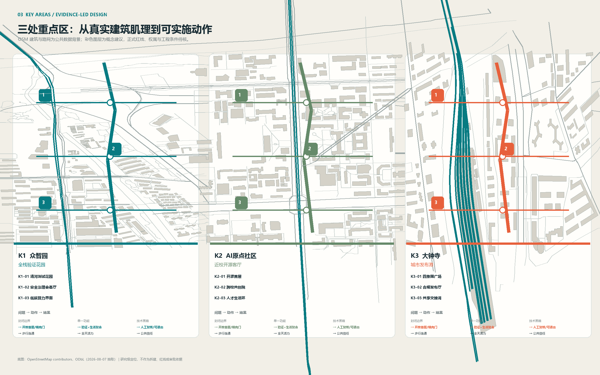
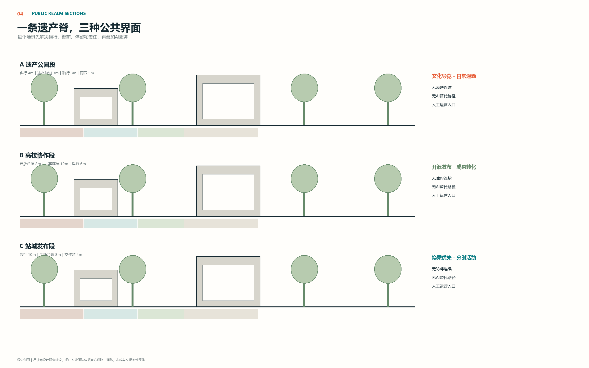
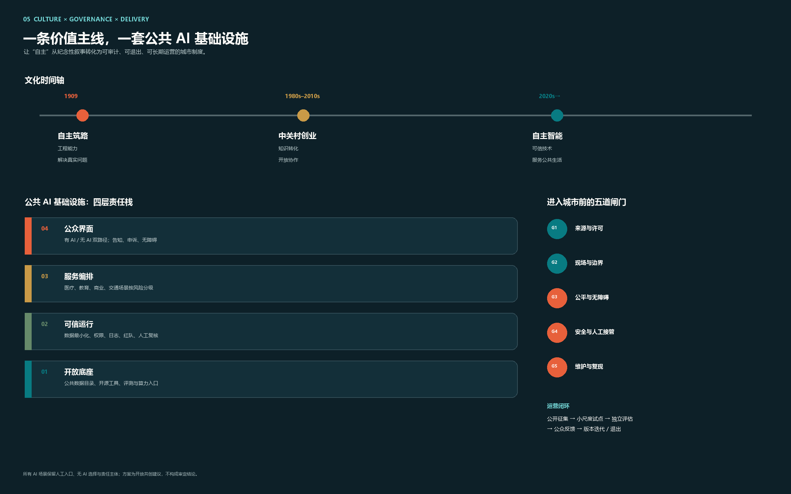

真实空间诊断
OSM公开路网、轨道、步行、教育、医疗和公园要素用于背景分析：南北资源密集，设计重点转向校园—园区—社区—站点的横向缝合。开放地图不替代官方红线、控规或工程条件。
从自主筑路，到自主智能。
以铁路遗址方向为公共创新基础设施，把开放模型、产业验证、人才生活和城市文化组织成一条可进入、可复核、可持续运营的城市公地。
OSM公开路网、轨道、步行、教育、医疗和公园要素用于背景分析：南北资源密集，设计重点转向校园—园区—社区—站点的横向缝合。开放地图不替代官方红线、控规或工程条件。
校—园协作门
北航北邮共创门
医疗服务门
社区生活门
大钟寺发布门
100天轻量试点
1—3年节点更新
3—8年系统深化
真实步行时间
无障碍完整率
人工转接与退出率
开源复现率
海淀2025：常住人口311.1万、GDP 13691.4亿元、92家全国重点实验室、123款备案上线大模型。官方概况：37所高校、96家国家级科研机构、144个公园。区级总量只用于区域基线，禁止下推为沿线地块需求。
官方统计
官方开放文件
清权聚合运营数据
不收个人订单
不存家庭地址
不保留可回溯轨迹
15分钟网格OD
慢行断点踏勘
配送冲突与设施使用
以詹天佑主持设计的京张铁路为精神原点，将“自主技术解决真实问题”延伸到开放模型、产业验证和公共治理。
百年京张文化带
都市AI生活体验带
AI融合创新带
众智园：验证
AI原点：转化
大钟寺：发布
清华园火车站
北航/北邮高校区
大钟寺城市发布港
本提案为公开、透明的共创建议，不构成审定结论；规划、建筑、交通、市政、文保与数据治理须由专业团队依据官方资料人工深化。
开放模型公地
城市验证公地
公共生活公地
一带三核
两环六码头
横向15分钟缝合
数据最小化
人工复核
无AI替代路径





以 metrics.json 实际值为准
众智园 / 原点社区 / 大钟寺
其中3项产业测试验证
总览地图｜三层范围｜重点区域｜用地分区｜交通慢行｜蓝绿公共空间｜建筑｜更新项目｜AI 场景｜核心指标｜任务覆盖｜自检状态｜来源｜假设